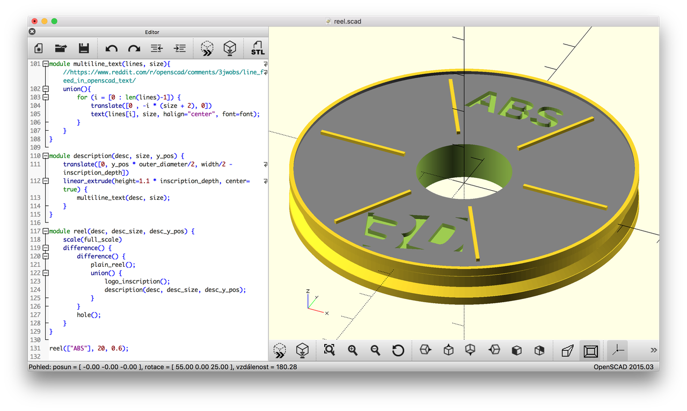
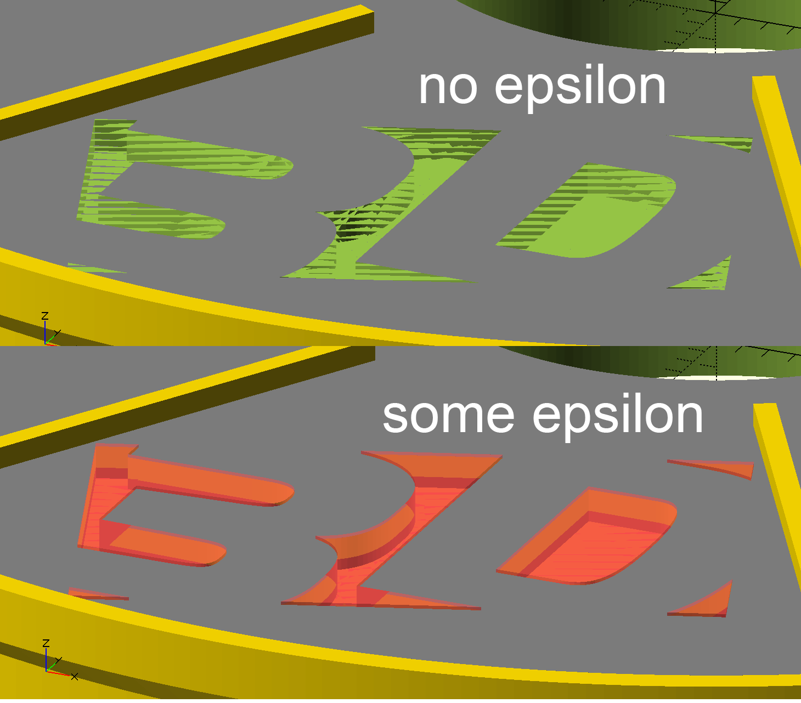

How to make STL with SVG logo and text in OpenSCAD
 We'll see how to create an STL model of a stylized filament reel with a logo from SVG and some text without clicking the mouse. Yes we'll write it procedurally in OpenSCAD, use templating and automate the whole thing. We'll see how OpenSCAD is a really natural tool for programmer and it very easy to start playing with and get impressive results.
We'll see how to create an STL model of a stylized filament reel with a logo from SVG and some text without clicking the mouse. Yes we'll write it procedurally in OpenSCAD, use templating and automate the whole thing. We'll see how OpenSCAD is a really natural tool for programmer and it very easy to start playing with and get impressive results.
Our today's goal is to prepare around 20 3D-printed things representing filament reels, each with a inset logo and a short name of the material. This little weekend project was done for Svět 3D Tisku (3D Print World), a local 3D print company ran by my parents, for 3D Expo Prague 2016. Imagine a big poster to present a collection of filament materials and for each there's a nice small tangible artifact made of that material.

OpenSCAD - Constructive Solid Geometry
Since I like programming more than GUI modeling tools and mouse clicking, I decided to try OpenSCAD. It allows to make 3D models using the Constructive Solid Geometry (CSG) and procedural modeling paradigms. Ie. we the model from primitive parts (cube, 2D polygon, linear extrusion), by applying transformations (traslate, scale, rotate) and set operations (union, intersection, difference). The model is described by a custom programming language. This is a different to the triangle mesh representation where only the border, not the solid itself is described.
For programmers the whole concept is much more intuitive and natural, eg. when compared to Blender with its overly complex UI with hard learning curve.
After I finished this project it felt vary natual and familiar. Then I realized I've already done something similar a few years ago in open-source RenderMan implementation Pixie for the university projected on the Shading Languages course.
Please refer to the OpenSCAD User Manual and the example models for the basics of OpenSCAD. Basically you write your code in one pane and see the model in the other. Useful keyboard shortcuts and commands.
-
F5- refresh the preview -
F6- render the model (do this before saving to STL) -
File->Export->Export to STL -
CMD-D- comment -
CMD-SHIFT-D- uncomment
Comments are C-like, ie. // ... and /* ... */

Creating a model - step by step
We would like to get a shape that roughly looks like a filament reel but is not too complex. On top of it we would like to put a logo and some abbreviation of the material name. We can model it in the dimensions of a real reel and than scale it to the final model size.
Real world example (colorFabb COPPERFILL Ø 2,85 m / 4m):
There are example snippets of code throughout the article. The complete source code is available in a git repo linked at the end of the article. You can clone it and play with it yourself. It's fully working.
Basic reel shape
The basic shape is a cylinder, ie. an extruded circle. The $fn argument makes the circle smoother - the circle is represented as a regular polygon and $fn specifies the number of its edges. Eg. cylinder of 190mm diameter, 20 mm high to represent the inner reel:
linear_extrude(height=20) {
circle(d=190, $fn=200);
}
In the final model it is shown in red.
Functions, set operations
Let's add two outer reels and a hole. As I said the model is really stylized and so the proportions do not match excatly a real-world reel. We can transform the primitives and operate on them with set operations. We can also extract constants to variables and refactor parts into functions (modules) which also can be parameterized.
outer_diameter = 200;
reel_diameter = 190;
hole_diameter = 55;
width = 20;
outer_reel_width = 5;
rim_height = 2;
module inner_reel() {
# without a semicolon this transformations affects the next statement
translate([0, 0, -width/2])
linear_extrude(height=width-rim_height*2) {
circle(d=reel_diameter, $fn=200);
}
}
module plain_outer_reel() {
linear_extrude(height=outer_reel_width) {
circle(d=outer_diameter, $fn=400);
}
}
module hole() {
translate([0, 0, -width])
linear_extrude(height=2*width) {
circle(d=hole_diameter, $fn=200);
}
}
# CSG set operations
difference() {
union() {
inner_reel();
plain_outer_reel();
}
hole();
}
Tip - visual debugging
A very useful way to ensure you are making the correct operations is visual debugging. Just add a # character before any part and it is displayed in transparent red. This way you can be sure what you are intersecting and diffing.
Beveled side + ribs
Let's add some rim by beveling the side and add some ribs just to make it look a bit more like a real reel.
module rib() { translate([hole_diameter/2 + rib_margin, -rim_height/2, outer_reel_width - rim_height]) cube([outer_diameter/2 - (hole_diameter/2 + 2*rib_margin), rim_height, rim_height]); } module ribs() { # this is the power of procedural models vs. clicking! for (angle=[0, 60, 120, 180, 240, 300]) { rotate(angle) rib(); } } module outer_reel() { union() { ribs(); difference() { plain_outer_reel(); color("gray") translate([0, 0, outer_reel_width - 2]) linear_extrude(height=2+1) { circle(d=outer_diameter - 5, $fn=400); } } } } module plain_reel() { inner_reel(); translate([0, 0, width / 2 - outer_reel_width]) // upper reel outer_reel(); // lower reel translate([0, 0, -width / 2]) rotate([180, 0, 0]) plain_outer_reel(); }
Conic supports
Originally I though it would be nice to make some thin flat outer circular parts of the reel (that holds the filament from sides). When we printed it I realized it needs supports, otherwise the printer just extrudes into air. To avoid using supports and save some priting time we modified the models to make some small supports directly in the model. Just add some conic sections that smoothly interpolate betweeen the inner and outer diameter.
Fortunately OpenSCAD provides this functionality right in the linear_extrude primitive, just and the scale parameter:
module conic_support() { linear_extrude(height=4, scale=1.05) { circle(d=reel_diameter, $fn=200); } } module inner_reel() { // inner cylinder translate([0, 0, -width/2]) linear_extrude(height=width-rim_height*2) { circle(d=reel_diameter, $fn=200); } // upper conic support translate([0, 0, 1.1]) conic_support(); // lower conic support translate([0, 0, -6.1]) rotate([180, 0, 0]) conic_support(); }
It worked like charm and the models was printed well.
Logo - from SVG
Now when we have a nice reel let's enhance it by adding our logo. Our logo is some vector graphics, so a DXF extrusion is an option.
I've extracted just a part of the logo from an AI (Illustrator) file and saved it as SVG. OpenSCAD can only open 2D vector files from DXF (Autocad), not SVG, so we have to first convert the SVG to DXF.
I've tried a few options and only this Inkscape plugin for export the DXF worked well: Inkscape-OpenSCAD-DXF-Export. Just download the repo and copy the dir and *.inx to ~/.config/inkscape/extensions (on Mac) and than start Inkscape. Then just open the SVG and File -> Save copy -> OpenSCAD DXF Output.
Then in OpenSCAD we import it into a 2D object:
import('logo.dxf');
In order to use it in CSG operations we have to extrude it:
module logo(height) { linear_extrude(height = height) { scale(0.15) import(logo_file); } }
In case nothing appears, make sure you select the default layer or the proper one. Look for AcDbLayerTableRecord in the DXF file. I once copied an example from the docs and it selected some other layer and I though the DXF file is not compatible. Also the model from DXF might have to be translated to the original of coordinates.
Let's inscribe the logo in the upper reel part:
module logo_inscription() { translate([0, -0.7 * outer_diameter/2, width/2 - rim_height - inscription_depth]) translate([-32.5,-22,0]) logo(1.1 * inscription_depth); // + epsilon } difference() { plain_reel(); logo_inscription(); }
The logo itself is a bit thicker and if we make it as thick as is lowered we may get into numerical problems. The solution is easy, just make it overlap a bit (by a small epsilon). If you've ever came across computational geometry or numerical programming this should have been deeply rooted in your blood :). Otherwide, you've just learned. Tip for reading: Numerical Robustness (for Geometric Calculations).

Text
Then we'd like to add some short description text inscriped in the the upper side similarly as the logo. OpenSCAD directly supports 2D text primitives which can be then extruded. That's exactly what we need.
linear_extrude(height=1) {
text("ABS");
}
We can set the text size, alignment and font to customize the text for aesthetics and legibility:
font = "Liberation Sans:style=Bold"; text("ABS", 20, halign="center", font=font);
We have texts of various length like "ABS", "BRASS", "PETG ESD" so we need to customize the font size and and Y position individually for a good git.
Multiline text
In order to use the space well without compromizing legibility we can split the text into multiple lines (in this case usually two). Since OpenSCAD's text() only supports a single line, we need to make more translated text() objects and union them. We're not the first to come across this problem and fortunately other people managed to get a working solution. So we'll use a snippet by user iggy_koopa.
module multiline_text(lines, size){ // https://www.reddit.com/r/openscad/comments/3jwobs/line_feed_in_openscad_text/ union(){ for (i = [0 : len(lines)-1]) { translate([0 , -i * (size + 2), 0]) text(lines[i], size, halign="center", font=font); } } } module description(desc, size, y_pos) { translate([0, y_pos * outer_diameter/2, width/2 - rim_height - inscription_depth]) // epsilon trick linear_extrude(height=1.1 * inscription_depth) { multiline_text(desc, size); } } description(["ABS", "ESD"], 17, 0.7);
The same epsilon trick as with the logo still holds.
Scaling the whole model
The basic units in OpenSCAD are millimeters. Since we used dimensions of a real reel (with 20 cm diameter) but want our models smaller (eg. 8 cm), we can just scale the shole model.
module reel(desc, desc_size, desc_y_pos) { scale(8 / 20) difference() { difference() { plain_reel(); union() { logo_inscription(); description(desc, desc_size, desc_y_pos); } } hole(); } }
Exporting to STL
Now we have single reel model and it's time to export an STL. In the UI it is quite simple:
-
F6- render the model - File -> Export -> Export to STL
In order to automate the things it would be nice to call OpenSCAD via command line. Fortunately, it supports it!
On Mac the binary is buried in /Applications, so to use it a little bit more comfortable we can link it to our ~/bin. This is optional.
# make sure you have ~/bin in your PATH $ mkdir -p ~/bin $ export PATH=PATH:~/bin $ ln -s /Applications/OpenSCAD.app/Contents/MacOS/OpenSCAD ~/bin/openscad
Then we can produce STL from an SCAD file this way:
$ openscad -o foo.stl -D 'quality="production"' foo.scad
It is quite slow. This model took about 1:15 min.
Exporting to PNG
Similarly we can export a thumbnail to PNG:
$ openscad -o foo.png foo.scad
Also we can set the camera position and orientation:
$ openscad -o foo.png foo.scad --camera=0,0,220,0,0,0
Refer to the docs for details.
Parametric models
It is nice that we were able to create one model but we want a models for each of ~ 20 materials. Well, we could copy a model, change something and save as another file. But such approach get too cumbersome when we want to change something and propagate the change into all the instnaces. Better, we can try to automate the whole process.
So we can make a parameterized model with variable text, font size and text position and then use it to make multiple instances. We want a separate STL for each model, so we have to create mulitple separate SCAD files.
An easy approach is to use eg. Python as the templating engine, store the parameters in a table (a CSV file) and generate multiple SCAD files. Then for each SCAD file we'll generate the STL and PNG thumbnail.
We store the parameterized model in the reel.scad file and provide a function:
module reel(desc, desc_size, desc_y_pos) { // ... }
Then we can include this file and call the reel() function to instantiate the model with given parameters and store it to other file:
use <reel.scad>; reel(["ABS", "ESD"], 18, 0.7);
Automating the whole thing
Python template generator
We store the definitions into a CSV file reel_texts.csv. The text column is split on whitespace into multiple lines. The size is text size in mm, the y_pos is the relative Y position.
text,size,y_pos ABS ESD,18,0.7 PETG ESD,18,0.7 ABS,20,0.6 [...]
To read the CSV we use pandas. Then we transform each row into a SCAD source code and store it into a file.
import os import pandas as pd df = pd.read_csv('reel_texts.csv', dtype=str) template = """use <../reel.scad>; reel([%s], %s, %s); """ dir_name = 'reels_scad' os.makedirs(dir_name, exist_ok=True) for index, row in df.iterrows(): normalized_text = row['text'].replace(' ', '_').replace('/', '') file_name = '%s/reel_%02d_%s.scad' % (dir_name, index, normalized_text) with open(file_name, 'w') as f: text = ', '.join(['"%s"' % t for t in row['text'].split(' ')]) f.write(template % (text, row['size'], row['y_pos']))
Converting to STL in batch
Let's convert all the generated SCAD files to STL files and store them to another directory. For ~ 20 files it took about half an hour. Right now I haven't tried to optimize it.
1 2 3 4 5 6 7 8 |
#!/bin/bash # Convert all reels from SCAD to STL STL_DIR=stl mkdir -p $STL_DIR for SCAD_FILE in reels_scad/*.scad; do STL_FILE=$STL_DIR/$(basename $SCAD_FILE .scad).stl time openscad -o $STL_FILE -D 'quality="production"' $SCAD_FILE done |
Converting to PNG in batch
We can do similar thing to obtain PNG thumbnails:
PNG_DIR=png mkdir -p $PNG_DIR for SCAD_FILE in reels_scad/*.scad; do PNG_FILE=$PNG_DIR/$(basename $SCAD_FILE .scad).png openscad -o $PNG_FILE $SCAD_FILE --camera=0,0,220,0,0,0 done
Bonus - array of thumbnails
It might be nice to see all the thumbnails in a single image. Python, numpy and matplotlib can save us and to the job in a few lines of code.
""" Makes a single thumbnail image from a set of individual PNGs. Order the images into a 2D matrix, so that it's nicely viewable. """ import matplotlib.pyplot as plt import numpy as np import glob image_files = glob.glob('png/*.png') w, h, channels = 512, 512, 3 rows, cols = 4, 5 # let's make a matrix 4x5, ie. select a nicely divisible subset image_files = image_files[:rows * cols] images = [read_image(f) for f in image_files] # make a single big matrix of images # (20, 512, 512, 3) -> images = np.vstack(images).reshape(rows, cols, w, h, channels) # (4, 5, 512, 512, 3) -> (4, 512, 5, 512, 3) -> (4 * 512, 5 * 512, 3) big_image = images.swapaxes(1, 2).reshape(rows * w, cols * h, channels) plt.imsave('thumbnails.png', big_image)
The code - git repository
That's it!
The complete code, including the scripts and graphics is available in a git repository. The license code the code (except for the logo) it MIT open-source, so feel free to use it.
- https://github.com/bzamecnik/s3dt-models/
About the company

Svět 3D tisku (3D Print World) is a Czech boutique e-shop and store providing broad range of fillaments, 3D printers and custom 3D print services for Central European customers (local companies, schools, hobbyists). The company is ran by by mum and dad and I'm trying to help them if time permits.
If you are in Prage around 10.-13. May 2016 feel free to visit our stand at 3D Expo Prague 2016 (details) and see the printed "reels" live :).
Conclusion
In this small weekend project we've learned the basics of OpenSCAD and were able to create some nice small but not completely trivial model. We've seem how to use a hierarchy of parameterized models, how to use text, import vector graphics logo from SVG and use it as an inscription. In order to avoid repetitive work we tried to automate all the steps from generating SCAD code, STL and PNG file up to making a summary table of thumbnails.
I hope this article has shown you that it is very easy to start with OpenSCAD (at least for programmers) and inspired you to make your own projects. If you have any questions, you can search the docs or drop some comment here. Thanks and enjoy!
Comments
Comments powered by Disqus